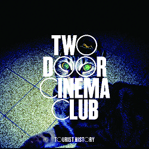
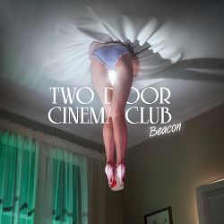
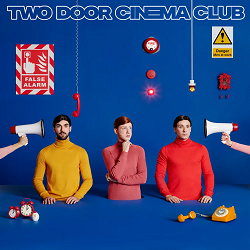

Как появилась группа?
Алекс Тримбл и Сэм Хеллидэй познакомились во время посещения Bangor Grammar School
. Они встретили Кевина Бэйрда, когда тот пытался познакомиться с их знакомыми. Название группы появилось после того, как Хэллидэй неправильно произнёс название местного кинотеатра Tudor Cinema
. Группа была образована в 2007 году.
Состав
- Алекс Тримбл - фронтмен, вокал, гитара, перкуссия, биты, синтезатор, ударные.
- Сэм Халлидэй - лид-гитара, вокал.
- Кевин Бэйрд - бас-гитара, вокал, синтезатор.
Дискография
Tourist History
Дебютный студийный альбом выпущен 26 февраля 2010 года в Ирландии, 1 марта - в Великобритании, а 27 апреля - в США. Название Tourist History (Туристическая История) группа выбрала из-за любви к путешествиям.
Beacon
Выпущен 31 августа 2012 года на лейбле Kitsuné. Этот альбом был записан в Лос-Анджелесе на домашней студии Джекнифа Ли.
Gameshow
Этот альбом был записан в Лос-Анджелесе с продюсером Джекнифом Ли и выпущен 14 октября 2016 года на лейбле Transgressive и Parlophone.
False Alarm
Он был выпущен 21 июня 2019 года. Завершив тур в поддержку своей предыдущей работы Gameshow, группа начала писать новые идеи в дороге. Несколько месяцев спустя в интервью Digital Spy вокалист Алекс Тримбл рассказал, что группа работает над альбомом и что будет интересно сотрудничество с другими артистами.